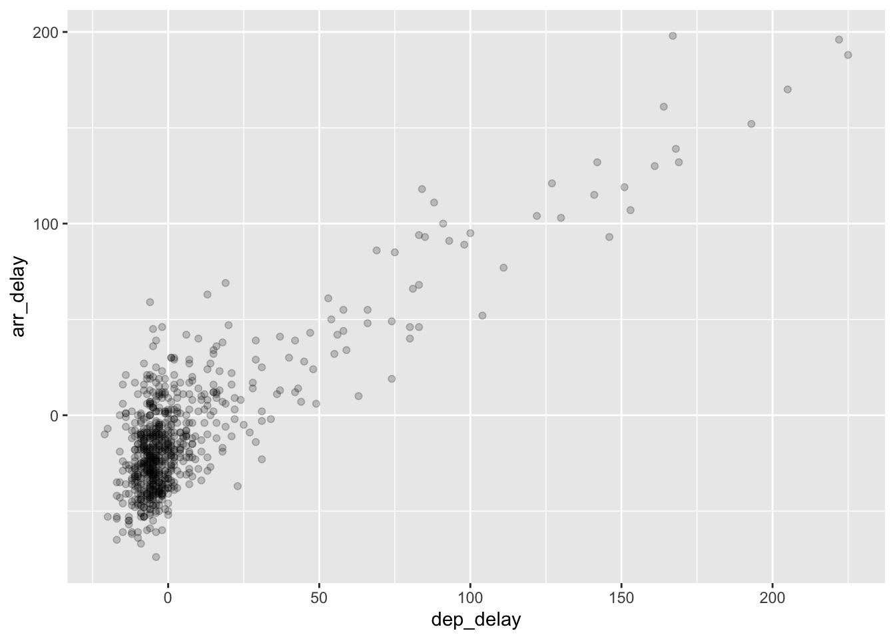

library(nycflights13)
library(ggplot2)
library(dplyr)Math 300 Lesson 2 Notes
Scatterplot
Objectives
Create a scatterplot using the
ggplot()function.Interpret the relationship between variables in a scatterplot.
Refine and improve scatterplots to illustrate relevant points by preprocessing the data or using functions such as
alpha()andgeom_jitter().
Reading
Lesson
Work through the learning checks LC2.1 - LC2.8. Complete the code when necessary.
Setup
We need to load the required packages for this document:
We need to create the alaska_flights data object. This is a subset of the flights dataset consisting only of those flown by the Alaskan Airlines carrier. Complete the code and remove the comment symbol #.
#alaska_flights <- ____________ %>%
# filter(carrier == "______")Exercise 1 (Objective 3)
(LC 2.1) Take a look at both the flights and alaska_flights data frames by running View(flights) and View(alaska_flights) in the console. In what respect do these data frames differ? For example, think about the number of rows in each dataset.
Solution:
Additional Setup
Build the plot for the next set of learning checks. We want to visualize the relationship between between two numerical variables: dep_delay (the departure delay on the horizontal “x” axis) and arr_delay (the arrival delay on the vertical “y” axis). Complete the code and remove the comment symbol #.
#ggplot(data = _______________, mapping = aes(x = ________________, y = arr_delay)) +
# geom_point()Exercise 2 (Objective 2)
(LC 2.2) What are some practical reasons why dep_delay and arr_delay have a positive relationship?
Solution:
Exercise 3 (Objective 2)
(LC 2.3) What variables in the weather data frame would you expect to have a negative correlation (i.e. a negative relationship) with dep_delay? Why? Remember that we are focusing on numerical variables here. Hint: Explore the weather dataset by using the View() function.
Solution:
Exercise 4 (Objective 2)
(LC 2.4) Why do you believe there is a cluster of points near (0, 0)? What does (0, 0) correspond to in terms of the Alaskan flights?
Solution:
###Exercise 5 (Objective 2)
(LC 2.5) What are some other features of the plot that stand out to you?
Solution: Different people will answer this one differently. One answer is most flights depart and arrive less than an hour late.
Exercise 6 (Objective 1)
Create a new scatter plot with departure time in the x-axis and arrival delay in the y-axis using your work above.
To insert an R code chunk into a markdown, there is the pulldown menu but you can also use Ctrl-Alt-I.
Solution:
Exercise 7 (Objective 2)
(LC 2.7) Why is setting the alpha argument value useful with scatterplots? What further information does it give you that a regular scatterplot cannot?
Solution:
Exercise 8 (Objective 2, 3)
alaska_flights <- flights %>%
filter(carrier == "AS")#Plot to use for this problem.
ggplot(data = alaska_flights, mapping = aes(x = dep_delay, y = arr_delay)) +
geom_point()
#Second Plot to use for this problem.
ggplot(data = alaska_flights, mapping = aes(x = dep_delay, y = arr_delay)) +
geom_point(alpha = 0.2)
(LC 2.8) After viewing the Figure 2 above, give an approximate range of arrival delays and departure delays that occur the most frequently. How has that region changed compared to when you observed the same plot without the alpha = 0.2 set in Figure 1?
Solution:
Documenting software
- File creation date: 2023-01-17
- R version 4.2.1 (2022-06-23)
ggplot2package version: 3.4.0dplyrpackage version: 1.0.10nycflights13package version: 1.0.2